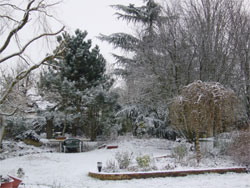
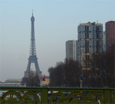

Paris in Sites NewsletterDirect from France
|
ParisBonjour from Paris, France! In Paris and around France winter has been mild. We had one day of winter in Boullay We had one morning of snow that turned everything into a fairyland of whiteness. Then by early afternoon all the snow had melted. It's been cool and quite rainy - not really warm yet, but the spring bulbs are poking their heads out of the ground and saying "I am ready to bloom." With morning temperatures from 3 to 5 Centigrade you'll probably still want to pack a warm coat. The afternoon temperatures are close to 15 degrees. Do dress in layers so you can be in your sweater or T-Shirt enjoying a drink at a Parisian café in the afternoon. château de RantonThe magnificent 14th-century château de Ranton can be rented in its entirety including the garden and grounds. The castle is ideal for up to 12 people with accommodation in seven superbly decorated bedrooms, each with a private bathroom.MontmartreI had a wonderful short break to Lyon, going by TGV. Can you imagine... our first class tickets were less than the 2nd class trip? See my story on train travel in France. Eiffel Tower Lyon has so many restaurants and our Friday evening meal was at Le Caro de Lyon. Delightful decor - you eat in the middle of a library and the food was ever so good. See my restaurant review for more details. Montmartre is a favorite place to visit in Paris and Thirza Vallois tells a wonderful tale. "With spring round the corner Montmartre calls, but with the weather being unpredictible, why not take shelter at le Lapin Agile late into the night. If the weather is with you, explore the neighbourhood earlier on in the day, on the vineyard's and the museum side rather than the touristy Place du Tertre." Travel Tip: Do book your accommodations in Paris and France early. Requests for the summer high season in 2007 and even for Christmas and New Year's 2008 are arriving, so don't wait to make your reservation. Paris Links |